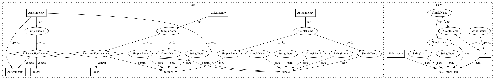

bd28ca3cb9f8e343780e8bb18792adb34bbbc446,tests/unit/sagemaker/image_uris/test_dlc_frameworks.py,,test_tensorflow_inference,#Any#,142
Before Change
def test_tensorflow_inference(tensorflow_inference_version):
for instance_type, processor in INSTANCE_TYPES_AND_PROCESSORS:
uri = image_uris.retrieve(
framework="tensorflow",
region=REGION,
version=tensorflow_inference_version,
py_version="py2",
instance_type=instance_type,
image_scope="inference",
)
expected = _expected_tf_inference_uri(tensorflow_inference_version, processor=processor)
assert expected == uri
for region in SAGEMAKER_ALTERNATE_REGION_ACCOUNTS.keys():
uri = image_uris.retrieve(
framework="tensorflow",
region=region,
version=tensorflow_inference_version,
py_version="py2",
instance_type="ml.c4.xlarge",
image_scope="inference",
)
expected = _expected_tf_inference_uri(tensorflow_inference_version, region=region)
assert expected == uri
def test_tensorflow_eia(tensorflow_eia_version):
uri = image_uris.retrieve(
framework="tensorflow",
region=REGION,
After Change
def test_tensorflow_inference(tensorflow_inference_version):
_test_image_uris(
"tensorflow",
tensorflow_inference_version,
"py2",
"inference",
_expected_tf_inference_uri,
{"tf_inference_version": tensorflow_inference_version},
)
def test_tensorflow_eia(tensorflow_eia_version):
base_args = {
In pattern: SUPERPATTERN
Frequency: 3
Non-data size: 13
Instances
Project Name: aws/sagemaker-python-sdk
Commit Name: bd28ca3cb9f8e343780e8bb18792adb34bbbc446
Time: 2020-07-16
Author: 6631887+laurenyu@users.noreply.github.com
File Name: tests/unit/sagemaker/image_uris/test_dlc_frameworks.py
Class Name:
Method Name: test_tensorflow_inference
Project Name: aws/sagemaker-python-sdk
Commit Name: bd28ca3cb9f8e343780e8bb18792adb34bbbc446
Time: 2020-07-16
Author: 6631887+laurenyu@users.noreply.github.com
File Name: tests/unit/sagemaker/image_uris/test_dlc_frameworks.py
Class Name:
Method Name: test_tensorflow_inference
Project Name: aws/sagemaker-python-sdk
Commit Name: bd28ca3cb9f8e343780e8bb18792adb34bbbc446
Time: 2020-07-16
Author: 6631887+laurenyu@users.noreply.github.com
File Name: tests/unit/sagemaker/image_uris/test_dlc_frameworks.py
Class Name:
Method Name: test_tensorflow_training
Project Name: aws/sagemaker-python-sdk
Commit Name: bd28ca3cb9f8e343780e8bb18792adb34bbbc446
Time: 2020-07-16
Author: 6631887+laurenyu@users.noreply.github.com
File Name: tests/unit/sagemaker/image_uris/test_dlc_frameworks.py
Class Name:
Method Name: test_chainer